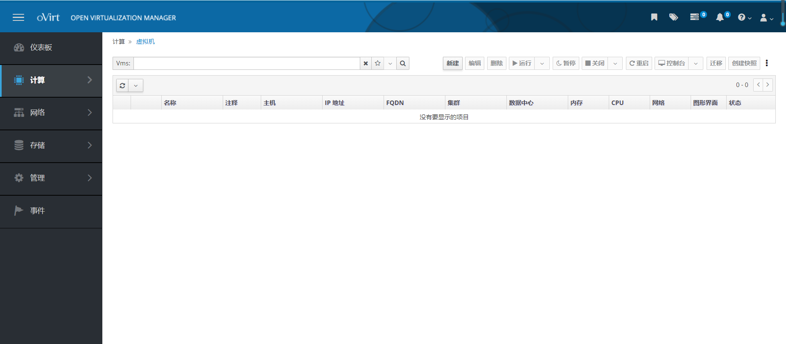

Table of Contents generated with DocToc
磁盘阵列
先安装配置raid10,挂载路径/data
根据磁盘数量创建阵列、推荐raid5

oVirt安装
配置阿里yum源
关闭selinux
setenforce 0
sed -i "s#SELINUX=enforcing#SELINUX=disabled#g" /etc/selinux/config
安装
yum install -y ovirt-release42.rpm
修改ovirt-4.2.repo、ovirt-4.2-dependencies.repo
#baseurl调整为baseurl
mirrorlist调整为#mirrorlist
gpgcheck=1调整为gpgcheck=0
sed -i 's#gpgcheck=1#gpgcheck=0#g' /etc/yum.repos.d/*.repo
yum -y update --nogpgcheck
yum install firewalld -y
yum install -y ovirt-engine --nogpgcheck
启动
systemctl start ovirt-engine
systemctl enable ovirt-engine
配置
确保80没被占用,或修改httpd服务端口
需要开启防火墙，不然配置报错
engine-setup
#默认配置
#engine-setup --accept-defaults

修改配置
echo "SSO_CALLBACK_PREFIX_CHECK=false" > /etc/ovirt-engine/engine.conf.d/99-sso.conf
重启
systemctl restart ovirt-engine
开放443端口
firewall-cmd --zone=public --add-port=443/tcp --permanent
#重新载入
firewall-cmd --reload
登陆

添加存储
计算 => 数据中心 => 新建

添加主机
关闭新建ssh连接确认
sed -i "s;# StrictHostKeyChecking ask;StrictHostKeyChecking no;g" /etc/ssh/ssh_config
systemctl restart sshd
关闭yum公钥检测
默认使用的时候没问题，通过ovirt使用提示校验公钥失败
sed -i 's#gpgcheck=1#gpgcheck=0#g' /etc/yum.repos.d/*.repo
新增主机
计算 => 主机 => 新建

点击确定前，确保目标主机yum可用，且关闭公钥检测
查看部署日志
tail -200f /var/log/ovirt-engine/engine.log
添加存储域
存储 => 存储域 => 新建


创建iso域
安装配置nfs
yum install -y nfs-utils rpcbind
systemctl daemon-reload
systemctl enable rpcbind
systemctl enable nfs-server
systemctl start rpcbind
systemctl start nfs-server
mkdir -p /images
echo "/images 192.168.0.0/16(rw)">>/etc/exports
exportfs -a
chmod 777 -R /images
创建iso域

上传镜像
ovirt-iso-uploader -v --iso-domain=images upload /root/CentOS-7-x86_64-Minimal-1810.iso

新增虚机
计算 -> 虚拟机 -> 新建

新增磁盘

添加网络

配置内存cpu、时区

配置引导

安装图形化界面客户端
启动、打开控制台

打开文件、安装操作系统

关机虚机、点击右上角... 创建模板

填写模板信息

从模板机创建虚拟机
计算 -> 模板 -> 创建虚拟机